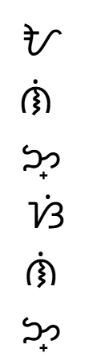

ABOUT THIS PROJECT
A tribute to the spirit and heritage of Filipino art.
This website is dedicated to honoring the beauty, creativity, skill, and passion of Filipino artists. It seeks to preserve and celebrate the Philippines’ rich cultural heritage of its artistry by showcasing a curated selection of paintings and sculptures that reflect the nation’s traditions and evolving artistic expressions.
MEET THE TEAM
This project is brought to life by a collective of individuals united by a shared admiration for Filipino art and culture. Through collaboration and a shared vision, we aim to provide a meaningful space where visitors can engage with, learn from, and celebrate the artistry that defines the Filipino spirit.
